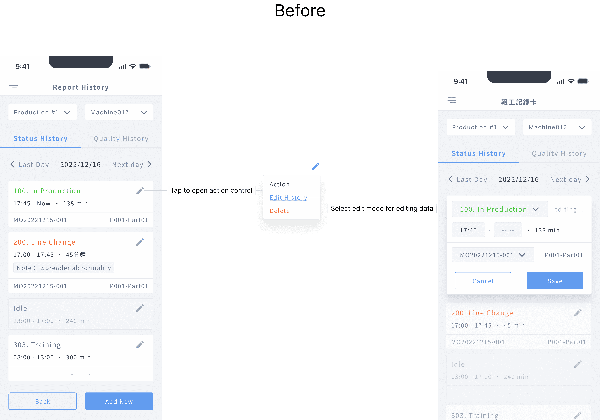

About this Project:
Light MES is a cost-effective solution for factories looking to begin their digital transformation journey. One of its key features is real-time reporting, where operators are responsible for reporting the current production status on the shop floor. This provides increased accuracy and transparency in production processes.
The implementation of Light MES leads to a paperless environment and digitisation of factory operations, resulting in improved efficiency and real-time updates.
Main Goal & Purpose:
Existing feature optimisation & Revision
Duration:
2022.11 ~ 2023.2 (4 months)
My Responsibility:
User Research, UX Design, UI Design, Project Management, Front-End Support
In 2020, we launched the first version of Light MES, but our team faced challenges in increasing and retaining our user base. We identified several problems, including:
To address these issues, we conducted user surveys and interviews to gain insights into how our users felt about our product. The feedback we received indicated that:
We also discovered that our current feature, originally designed for clocking in and out and recording tasks performed in a factory, did not align with our desired user flow of reporting real-time production line status.
As a result, we needed to redesign our features to better meet our users' needs and improve their experience with Light MES.
To better understand the differences between the original use and the current use of the feature, we conducted a comparison analysis. The table below outlines the key differences between the original use and the current use of the feature by operators:
By analyzing these differences, we were able to gain a deeper understanding of how the feature was originally intended to be used and how it was currently being used. This analysis highlighted the need to make significant changes to the feature in order to better align it with the needs of our users and improve their overall experience with the product.
After analysing our findings and user research, we created a user journey map to visualize the issues in the current user flow.
Based on our user research, we identified four key priority issues that need to be addressed:
To summarise our findings, we have created a UX Problem Definition Sheet, which outlines the following:
In addition, we have refined our new UX service blueprint as shown below:

Before moving on to the design stage, we defined some simple user stories to guide us.
And here we come our goal:
To achieve these goals, we reconstructed the site map for better navigation.
These changes will help users with the following:
1. Better Navigation (Reduce 25% of navigation time)
2. More flexible for both real-time reporting and history review scenarios.
To improve communication with team members, we created a wire-flow after having a concrete vision of our design:
Along the way, we went back and forth with the team members and some of our users to adjust our design, and as a result, we made several changes.
1. Replacing Redo Action with Confirm Message:
Due to time constraints and technical limitations, and considering that the redo function was not a critical aspect of the project, we decided to replace it with a confirm message. This allowed us to avoid developing a new function that would have minimal use.
2. Streamline the Editing Process:
Initially, we were concerned about users accidentally entering edit mode. However, after testing the prototype with users, we discovered that opening edit mode in more than two steps was actually more frustrating for them than the risk of opening it by mistake. Therefore, we simplified the edit flow to make it more efficient and user-friendly.
3. Sense of accomplishment for completing tasks:
In our initial design, users could only update the production status. However, after user testing, we discovered that they viewed updating the status as akin to checking off an item on a to-do list. They wanted a visual confirmation that they had completed the task. Without it, they felt unfulfilled.
While adding an additional step conflicted with our goal of streamlining the process, we believe that a "finish" button will help to increase engagement and motivation among users.
And here is our final result:


Since launching the new version, we've seen substantial improvements, as evidenced by the following metrics:
But we are not finishing…
Despite these achievements, we have been questioning whether our product truly adds value for operators, who are using it as part of their job rather than out of spontaneous desire.
To ensure we are addressing their needs, we have decided to conduct a five-day design sprint. We will focus on discovering what motivates and interests operators, so we can continue to enhance their experience with our product and make their job easier. And this marks the beginning of our next thrilling journey.